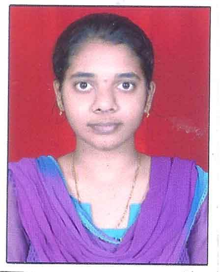

|  |
RASUKATCHULA SONUKUMARIContact Me |
Looking to obtain a job that will challenge me and allow me to use my education, skills and past experience in a way that is mutually beneficial to both myself and my team and allow for future growth and advancement.
| PYTHON PROGRAMMING | ⭐⭐⭐⭐⭐ |
| TCL PROGRAMMING | ⭐⭐⭐⭐⭐ |
| HTML | ⭐⭐⭐ |
| DJANGO | ⭐ |
| JAVA | ⭐⭐⭐ |
| Selenium | ⭐⭐ |
| Windows | ⭐⭐⭐⭐ |
| Linux - (ubuntu) | ⭐⭐⭐⭐ |
| L2 Protocols: | ARP, STP, VLAN, VTP. | ⭐⭐⭐⭐ |
| L3 Protocols: | OSPF, RIP, BGP. | ⭐⭐⭐ |
| Hands-on Protocols: | DEPI, MPEG-2, SDV, VOD. | ⭐⭐⭐ |
| Organisation | : | HCL Technologies. |
| Client Name | : | Cisco Systems, Inc. |
| Team Size | : | 9 |
| Duration | : | Nov 2017 to till date |
| Role Performed | : | Dev Test Engineer. |
RFGW-10 defines a cable network infrastructure. RF Gateway product meets the most demanding requirements of cable operators worldwide. RF Gateway offers concurrent support for standard and high definition digital broadcast television, switched digital video (SDV), video-on-demand (VOD) and DOCSIS modular cable modem termination system (M-CMTS) services.
▻ DEPI (Downstream External PHY interface) Feature provides an IP tunnel between Cisco M-CMTS and EQAM interfaces for carrying DOCSIS frames from M-CMTS to EQAM.
▻ DVB (Digital Video Broadcasting) is a European standard used for encrypting video content.
▻ Power Key is a Cisco proprietary standard for encrypting video content.
▻ PME (Privacy Mode Encryption) is a Motorola Proprietary standard for encrypting video content..
▻ Used Cricket, DekTec (Mpeg Analyser) & Set-top Box for verifying video & MPEG Transport stream.
▻ Responsible for debugging the issue found in test-case execution, isolate the problem & file bugs using CDETS tool.
▻ Automating test-cases using TCL/Python with ATS package.
▻ Bug analysing/verification.
| Year-of-study | Course of Study | Institute | Percentage (%) |
|---|---|---|---|
| 2016 | Bachelor of Engineering and Technology (CSE) | Bharat Institute of Engineering and Technology, Affiliated to JNTU, Hyderabad | 72% |
| 2012 | Intermediate | Narayana Junior college, Hyderabad | 89% |
| 2010 | SSLC | ViswaBharathi Matriculation Higher Secondary School, Chennai | 79% |
| Name | : | R.Sonukumari |
| Father's Name | : | R.Ramesh |
| Mother's Name | : | R.KrishnaKumari |
| DOB | : | 11-01-1995 |
| Gender | : | Female |
| Marital Status | : | Single |
| Nationality | : | Indian |
| Address | : | 32, Yamuna Street, |
| Sri Devi Karumariamman Nagar, | ||
| Velachery, Chennai – 600042. | ||
| Languages Known | : | English, Telugu, Tamil, Hindi. |
| Hobbies | : | Classical Dance (Bharatanatyam), Carnatic Vocal, Chess. |
I hereby declare that the above furnished details are true to the best of my knowledge.
Place:Yours Truly,
Date:(R. SONUKUMARI)